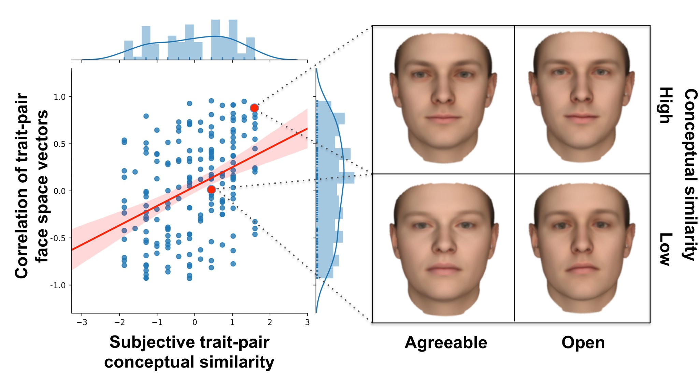
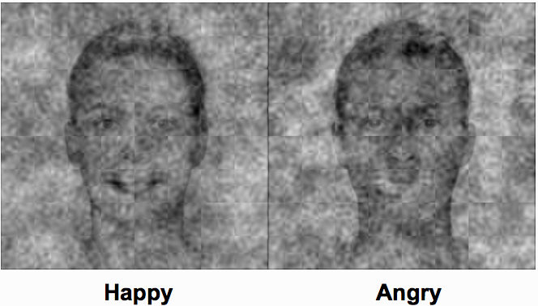
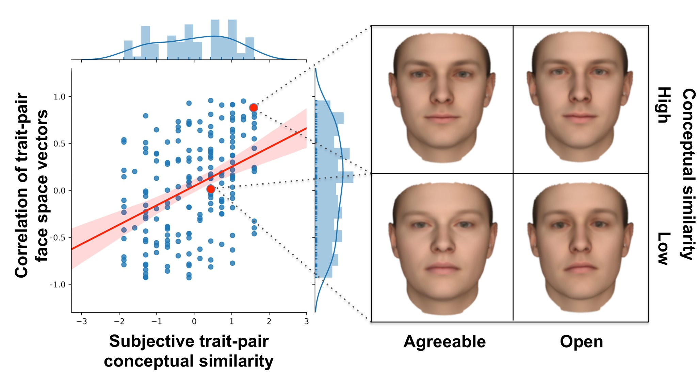
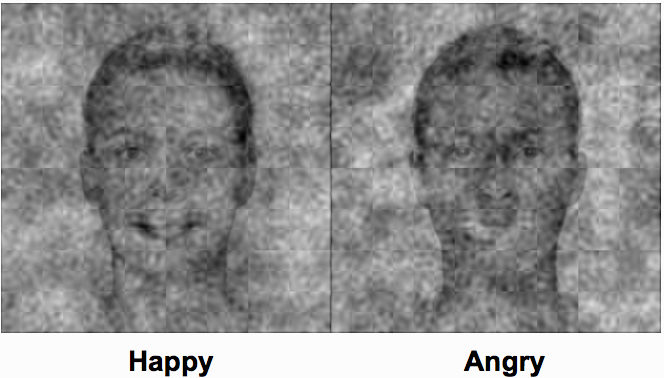

Back to start
My principal interest that guides all my research questions is in top-down influences on visual perception. Our ability to understand the world around us is completely transparent - it just seems to show up for us automatically - but the brain has evolved to be flexible and predictive in all circumstances. In order to rapidly make sense of the extremely variable and noisy environment, the perceptual system needs to make use of associations, concepts, co-occurences, and our own idiosyncratic memories in order to make sense of it. To what extent do these social and cognitive factors shape our perceptions, and how does this happen in the brain?
The particular area that I've explored these interests is social face perception - our ability to look at someone and spontaneously know attributes like their emotional state, gender, race, and even their personality traits. A particularly exciting research domain to me is emotion perception - our ability to seemingly perceive what others are feeling. This has been an object of concern and fascination for scholars since antiquity, and only recently have we started to understand how we actually accomplish this feat of perception.
My approach to studying emotion is influenced by theoretical approaches developed in part by my current advisor Jon Freeman (i.e. the Dynamic-Interactive Model) and my past advisor Kristen Lindquist (i.e. the Theory of Constructed Emotion). These approaches assume that our perceptions of emotion categories from facial expressions are not driven by someone's facial actions alone, but are subject to rapid influence from a myriad of social and cognitive factors such as contextual information, prior knowledge (our memories and experiences associated with these categories), and stereotypes associated with other social categories an individual may belong to (e.g. gender, race, age). In the case of the Theory of Constructed Emotion, this approach also assumes that our emotional experiences are influenced and scaffolded by these cognitive processes as well. I wrote about how these processes apply to social face perception in a recent short review paper.
The role of conceptual knowledge in facial emotion perception My earliest investigation into this topic was a neuroimaging meta-analysis on fMRI and PET studies on emotion. Language (e.g. words like "anger" and "fear") is intimately related to our concepts for emotion. Across hundreds of neuroimaging studies, we investigated the incidental impact that language has on the way that emotional experiences and percepts are processed in the brain. We found that the more emotion words were present in a task (in instructions or as response options on the screen), the less likely the amygdala would be active (indicating less arousal and uncertainty) and the more likely that semantic processing regions would be active. Supplying people with conceptual information about emotion through language incidentally shapes the way they process this information, even though none of the studies we analyzed were explicitly investigating the link between language and emotion.
Of course, there aren't always words in the environment cueing and shaping our perceptions of emotion. In order to directly investigate whether someone's personally held conceptual knowledge spontaneously shapes emotion perception, I recently ran a set of studies that directly assessed the relationship between how people conceptually represent emotion categories and how they visually perceive these categories in others' faces. I found a strong correspondence between each individual's conceptual and perceptual structure of emotion categories, controlling for the influence of facial cues. For example, if someone believes that Anger and Disgust are conceptually similar emotions (with more similar associated feelings and eliciting situations), they will perceive those emotions more similarly. We measured perceptual similarity through computer mouse-tracking (which showed that individuals were more likely to co-activate conceptually similar emotion categories from the same facial features) and reverse correlation, which showed that individuals were more likely to associate similar facial cues with emotions they found conceptually similar.
individual variability in emotion perception
One important implication of this line of work is that, since everyone's unique conceptual knowledge about emotion is brought to bear on their perceptions of these emotions, there is natural flexibility and variability between people in how they see emotions in others. Directly investigating the development and consequences of individual variability in emotion perception is an important task for future work in this area.
The neural basis of flexible emotion perception Etc.


Research
My principal interest that guides all my research questions is in top-down influences on visual perception. Our ability to understand the world around us is completely transparent - it just seems to show up for us automatically - but the brain has evolved to be flexible and predictive in all circumstances. In order to rapidly make sense of the extremely variable and noisy environment, the perceptual system needs to make use of associations, concepts, co-occurences, and our own idiosyncratic memories in order to make sense of it. To what extent do these social and cognitive factors shape our perceptions, and how does this happen in the brain?
The particular area that I've explored these interests is social face perception - our ability to look at someone and spontaneously know attributes like their emotional state, gender, race, and even their personality traits. A particularly exciting research domain to me is emotion perception - our ability to seemingly perceive what others are feeling. This has been an object of concern and fascination for scholars since antiquity, and only recently have we started to understand how we actually accomplish this feat of perception.
Emotion Perception
Dynamically constructed emotion experience and perceptionMy approach to studying emotion is influenced by theoretical approaches developed in part by my current advisor Jon Freeman (i.e. the Dynamic-Interactive Model) and my past advisor Kristen Lindquist (i.e. the Theory of Constructed Emotion). These approaches assume that our perceptions of emotion categories from facial expressions are not driven by someone's facial actions alone, but are subject to rapid influence from a myriad of social and cognitive factors such as contextual information, prior knowledge (our memories and experiences associated with these categories), and stereotypes associated with other social categories an individual may belong to (e.g. gender, race, age). In the case of the Theory of Constructed Emotion, this approach also assumes that our emotional experiences are influenced and scaffolded by these cognitive processes as well. I wrote about how these processes apply to social face perception in a recent short review paper.
The role of conceptual knowledge in facial emotion perception My earliest investigation into this topic was a neuroimaging meta-analysis on fMRI and PET studies on emotion. Language (e.g. words like "anger" and "fear") is intimately related to our concepts for emotion. Across hundreds of neuroimaging studies, we investigated the incidental impact that language has on the way that emotional experiences and percepts are processed in the brain. We found that the more emotion words were present in a task (in instructions or as response options on the screen), the less likely the amygdala would be active (indicating less arousal and uncertainty) and the more likely that semantic processing regions would be active. Supplying people with conceptual information about emotion through language incidentally shapes the way they process this information, even though none of the studies we analyzed were explicitly investigating the link between language and emotion.
Of course, there aren't always words in the environment cueing and shaping our perceptions of emotion. In order to directly investigate whether someone's personally held conceptual knowledge spontaneously shapes emotion perception, I recently ran a set of studies that directly assessed the relationship between how people conceptually represent emotion categories and how they visually perceive these categories in others' faces. I found a strong correspondence between each individual's conceptual and perceptual structure of emotion categories, controlling for the influence of facial cues. For example, if someone believes that Anger and Disgust are conceptually similar emotions (with more similar associated feelings and eliciting situations), they will perceive those emotions more similarly. We measured perceptual similarity through computer mouse-tracking (which showed that individuals were more likely to co-activate conceptually similar emotion categories from the same facial features) and reverse correlation, which showed that individuals were more likely to associate similar facial cues with emotions they found conceptually similar.
individual variability in emotion perception
One important implication of this line of work is that, since everyone's unique conceptual knowledge about emotion is brought to bear on their perceptions of these emotions, there is natural flexibility and variability between people in how they see emotions in others. Directly investigating the development and consequences of individual variability in emotion perception is an important task for future work in this area.
The neural basis of flexible emotion perception Etc.

Perceivers who believe agreeable people are often open-minded infer agreeableness and openness more similarly in faces (Stolier, Hehman, Keller, Walker, & Freeman, submitted).
Social categorization
While my main focus has been investigating how we perceive emotion in faces, this approach treats emotion as one of many categories that we rapidly infer from facial features. I ran one set of studies looking at the way that facial emotion categorization interacts with sex categorization. Sex and emotion are intimately related in our culturally-held stereotypes, with men typically stereotyped as more angry and aggressive and women typically stereotyped as more happy and docile. Using reverse correlation, we tested whether these intersecting stereotypes between sex and emotion categories resulted in biased perception. We found that people tend to associate the same facial cues with the categories Male and Angry and the categories Female and Happy. Importantly, the extent to which individuals showed this perceptual bias was dependent on how strongly they held stereotypical associations (Male-Angry, Female-Happy). This study provides an additional piece of evidence that conceptual knowledge (i.e. stereotypes) shape perception, and also that the variety of social categories someone belongs to can bias and constrain perception of one another. Reaching a greater understanding of the downstream consequences of these entangled and possibly biased perceptions is an important future direction in this line of work.